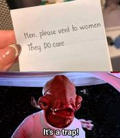

"The crypto industry's top legislative priority failed on Tuesday in spectacular fashion," reports Barron's.
A procedural motion to advance the bill failed by a vote of 49 to 50, with a handful of Republicans joining all Democrats to shoot it down. The motion needed 60 yes votes to pass, and with the midterm elections looming, the Senate isn't expected to pick the bill back up this year. Among other provisions, the bill would have taken most crypto trading out of the purview of securities regulators, a key goal of firms like Coinbase Global...
The vote is especially bitter for the crypto industry, which has spent hundreds of millions of dollars on lobbying and campaign expenditures over the past year to even get to this point. Crypto regulation doesn't even register among the issues voters care most about, and the industry has created massive political action committees to insert itself into the Washington agenda and strike fear into the hearts of lawmakers who might oppose them... Democrats who voted against the bill said that it needed to do more to rein in [Trump's] crypto dealings to get their support. Some GOP lawmakers also voted against the motion after pressure from community bank executives. Bankers argued that the bill needed a stronger ban on high-yield crypto accounts to protect their deposits, a contention that crypto executives and the White House said was nonsense.
Concerns about the bill "intensified after President Trump disclosed he and his family had earned $1.4 billion last year from his crypto ventures," reports NPR. "The massive bill — which stretches over 600 pages — would have established the first regulations for the crypto sector in U.S. history. But opponents saw it as the industry's attempt to encode into law a set of rules they saw as far too lenient on the industry, without enough safeguards."
A research note from an analyst at Compass Point Research & Trading predicts the bill is now likely tabled until at least 2030, Barron's notes. But they also report what the crypto industry could do next:
[C]rypto firms will be leaning heavily on Trump's regulators at the Securities and Exchange Commission, Commodity Futures Trading Commission and Treasury Department, all of whom have said they plan to move swiftly to implement industry friendly rules if a bill didn't pass. The SEC has already dropped all major enforcement actions against crypto firms and has begun to introduce rules that make it easier to raise money from crypto sales without running afoul of the law. The agency is also expected to implement rules making it easier to tokenize traditional assets like stocks.
The friendly regulatory environment will in effect give the industry a little more than two years to sink roots into the traditional financial system and consumers' wallets. Even if the SEC took a harsh view of the industry in the future, as it did in President Joe Biden's administration, the agency at that point might find it difficult to put the genie back in the bottle.
Read more of this story at Slashdot.
404 Media reports:
Last summer, a cop with the Lake County, Indiana Sheriff's Department used Flock's surveillance search engine to look for a license plate across more than 19,000 cameras in 1,558 cities and towns. The cop's stated reason for the search, according to a record of Flock's system, was "LMAO."
The cop is one of dozens who put gibberish, jokes, or other nonsense into Flock's "reason" box, highlighting the casualness and lack of care some cops have when searching an incredibly powerful surveillance system. This is on top of the thousands upon thousands of cops who simply wrote something like "investigation," "test," or left the box blank as their search "reason," according to a new analysis by the Electronic Frontier Foundation and shared with 404 Media.
EFF's investigation found cops across dozens of jurisdictions writing "LMAO," "LOL," "Hehe," "Haha," "idk," "blah," "TBD," and "robbery I don't remember the case number leave me alone" in Flock's "reason" box for searches.
They found cops writing "idiot," "fuck this new search engine," "dickhead," "shithead," and "WEIRD KID" in the reason box. And they found an entire class of police button mashers, who ran searches for reasons of "asdfg," "gyghkkghghjkghjk," "jhjhjkhj," "jkhhkjhjk," "nmbvcbnm," and so on and so forth. The searches came from police departments across the country from 2023 through late 2025, when Flock changed how the "reason" box in its search system functions...
Each time a search is performed, a record of it is saved in the Flock system, which can be obtained by the public using government records requests. These audit logs show hundreds of thousands of searches of the system; after 404 Media and other news outlets used these types of logs to show police using the Flock system to look for undocumented immigrants on behalf of ICE, a woman in Texas who had an abortion, and protesters, cops were warned by government surveillance centers to be "as vague as permissible" about the reasons for their searches...
A police department said it investigated a cop who wrote "driving around being weird" in the reason field but found it was for "legitimate public safety purposes."
If a police chief "stood in front of a city council and asked for permission to install hundreds of cameras just so his officers could investigate the high crime of 'haha,' they would be laughed out of the room," argues the EFF blog post, calling this proof that agencies can't be trusted to oversee themselves.
But judges aren't being asked to authorize searches or review evidence, which the EFF post argues shows laws and courts haven't caught up yet with a new technology. Whatever auditing happens is clearly "deficient," the EFF warns, and while many jurisdictions require by law an actual reason for searches, "this keeps happening because police use automated license plate readers as a convenient shortcut around constitutional privacy safeguards." The EFF sees police officers "making a mockery of our civil liberties" by logging reasons like "LOL", "LMAO", "sexy", and "idk" while accessing sensitive location data.
In fact, they argue the warrant-less databases fostered a culture of abuse that "allowed police to treat a mass surveillance network like their own personal search engine, permitting the tracking of the movements of everyday citizens for low-level complaints, personal whims, and sometimes, seemingly, for the lols."
Flock Safety claims it has improved its system by requiring officers to select from a dropdown list of crimes before running a search-but that only makes it easier for officers to hide improper searches behind the veneer of uniformity. The system does not require proof that the dropdown reason actually matches the true purpose of the search... Since this update, officers are no longer required to type out why they are digging through a driver's movement history, and instead can select a pre-packaged option like "Traffic infraction" or "Other" in half a second...
Mass surveillance is incompatible with a free society, and especially so when the people with access to this data are treating it like a joke. This ALPR mass surveillance — the indiscriminate, continuous collection and retention of location data on every driver, regardless of suspicion — should not exist. But because it does, EFF continues to urge courts and state legislatures to immediately step in and impose strict, enforceable restrictions to rein in this abuse. At an absolute minimum, this means mandating rigid data deletion deadlines and an ironclad warrant requirement.
If police want the power to track a person's movements, they must be required to convince a judge with evidence and probable cause. They should not be able to bypass the Constitution with a search for "haha."
Read more of this story at Slashdot.
The New York Post wrote that OpenAI "stunned the mathematics world" last week when it announced its AI model "cracked a legendary math problem left unsolved for nearly a century in just 88 hours."
But a New York University professor "has come forward alleging OpenAI may have copied his work after asking him to collaborate — with one of the company's scientists allegedly warning he might 'ruin his career' if he refused."
[P]rofessor Tristan Buckmaster, a British-Australian researcher who trained in Germany... had been working with Long Island-raised math prodigy Levent Alpöge, a researcher with OpenAI rival Anthropic, on a different elusive fluid dynamics equation, known as the Euler problem, when he found a solution using AI tools from both Anthropic and ChatGPT. He said scientists from OpenAI approached him and tried to convince him to jointly announce the solution, claiming they had independently solved Navier-Stokes. Buckmaster questioned the timing of their finding the solution in a blog post, noting OpenAI had only done so "in the past few days" — after the company became aware of his work. He asked OpenAI experts whether its AI systems used to solve the equation had been "trained on, or had access to" his research, but said they declined to answer, prompting him to wonder how they had advanced toward the solution so quickly. The puzzle is "not the direction one arrives at in a few days," Buckmaster wrote incredulously...
In OpenAI's post on its website sharing the Navier-Stokes proof, which it credited to Astra, the company's latest AI bot, the firm insisted no user data was incorporated into its model to solve the problem. However, it noted that it "cannot rule out" that anonymized data was used to "improve our models."
"We congratulate Levent Alpöge and Tristan Buckmaster on their remarkable mathematical work," OpenAI said in the announcement.
Buckmaster shot back, "Is it ethical to use customer's data to try to scoop their customer?"
Alpöge's affiliation with Anthropic "seems to have been a sore point for OpenAI," writes TechCrunch.
Buckmaster's public statement says the OpenAI's Sebastien "twice asserted that he wanted Levent removed from authorship" and also said that "it was so annoying that Levent works at Anthropic" — but that Buckmaster still refused to remove the Anthropic mathematician's credit.
I said that if OpenAI released its result in the way proposed I would go
public with what happened. The reply was, "Why would you ruin your career?" [OpenAI's Bubeck said later on X that he'd meant unfounded accusations could damage Buckmaster's career.] I replied that I am an academic, and asked why he thought going public would ruin my career. The reply was, "If you don't want me to be nice, then I don't have to be nice."
Buckmaster later told Australia's public broadcaster ABC that the companies building AI "have zero respect for the scientific community. I mean, it's appalling, honestly." But he went on to say AI has made the race to publish mathematical breakthroughs pointless.
"I think it's pointless. Like, I think the game is up...." Professor Buckmaster said he and Dr Alpöge had more research they could publish but questioned the point of racing ahead with it when AI could perform work that had previously occupied researchers for years.
He said there needed to be a discussion about how mathematics should operate in this new environment. Professor Buckmaster said some mathematicians had stopped publicly sharing what they were working on to avoid tipping off AI companies about their plans. He has called on academics and people from OpenAI, Anthropic and DeepMind to discuss ground rules for how they worked together.
He said the companies' power carried responsibilities that went beyond competing to solve problems before their rivals...
Building on the work of mathematicians Diego Córdoba and Luis Martínez-Zoroa, the pair found a solution to the Euler problem, a stepping stone to the Navier-Stokes problem. Professor Buckmaster said he spent weeks checking and improving the "slop" proofs generated by AI...
For now, Professor Buckmaster said he wanted to finish existing work and support his PhD students and postdoctoral researchers, rather than chase another Millennium Prize. "I think it's more important to re-evaluate what math is," he said.
"The New York University professor also warned Australia about the centralisation of resources into the hands of a small number of privately owned foreign companies..."
Read more of this story at Slashdot.
Reuters reports:
A defense lawyer appealing his client's murder conviction submitted a brief containing made-up police testimony and witnesses fabricated by OpenAI's ChatGPT, New Mexico's highest court said. The New Mexico Supreme Court on Wednesday fined the attorney, Stephen Aarons [for $5,000], and held him in contempt for failing to verify the accuracy of the court filing, which Aarons said he prepared with help from the AI program... and said they will refer him to an attorney disciplinary board for investigation.
Aarons in a statement to Reuters said he had used ChatGPT to summarize the trial proceedings when he agreed to take up the defendant's appeal last year, and did not understand the degree to which AI could "hallucinate" facts. "I am remorseful but hopeful that the disciplinary board takes into account it was an honest mistake," he said.... Dozens of lawyers have been sanctioned for filing briefs where AI made up case citations or misquoted the law. Aarons' filing appears to have gone further, containing fabricated witness testimony in a criminal appeal...
Aarons told the court at an August 21 hearing that he fed a computer-generated transcript and other case materials to ChatGPT, presuming it would generate "a bulletproof summary." The justices sounded incredulous that Aarons was not fully aware of how AI can make mistakes. "Counsel, do you watch the news? Do you listen to the radio? Do you read anything about what's going on in the world?" Justice C. Shannon Bacon said at the hearing. "Because the problem with lawyers relying on AI hallucinations is an above-the-fold story every single day."
"OpenAI did not immediately respond to a request for comment."
Read more of this story at Slashdot.
"Californians just made it through the hottest August on record without having to endure any rolling power outages," reports the Los Angeles Times. In fact, the state hasn't implemented rotating power outages since 2020.
Because "Over the last few years, California has quietly but dramatically increased the resiliency of its electrical grid through a significant expansion in battery energy storage."
These batteries hold onto solar energy captured during the day, so it can be sent to the grid as demand peaks in the evening and morning, when most people are at home running air conditioners and other appliances.
During the August heat wave of 2020, the California Independent System Operator, which manages the flow of electricity for most of the state, declared a Stage 3 Emergency and hundreds of thousands of households lost power in rolling outages. At the time, the system had less than 100 megawatts of battery storage available, according to system spokesperson Jayme Ackemann. Today, it has more than 17,000 megawatts available....
According to Ackemann, the system seeks to add 20,000 to 25,000 megawatts of battery storage capacity by 2045 — the same year it has set a goal of achieving carbon neutrality. That means the state would remove as many carbon emissions from the atmosphere as it emits.
In recent years, California has steadily grown the share of electrical power generated by renewable sources — such as solar, wind, geothermal and hydropower — which bolstered the resiliency of the grid by increasing the overall amount of energy available. An uptick in people installing rooftop solar panels has provided an additional power boost, Ackemann said. In May, California became the first known large-scale power system in the world to have relied on more than 50% solar power for an entire month.... California's grid is also now integrated with electrical systems across much of the Western United States. This means that if there is an extreme heat event in Southern California, energy from a cooler area such as the Pacific Northwest can be imported to help meet regional demand. All of this has collectively helped the state's electrical system weather this year's long-lasting heat.
"Southern California continued to break temperature records this week when Long Beach and Anaheim reached a blistering 107 degrees and Escondido hit 112 degrees..."
Read more of this story at Slashdot.
Silicon Valley giants and national security experts "are calling for action against Chinese companies engaged in model distillation," reports CNBC. But "I would do nothing," says Y Combinator CEO Garry Tan. "We could argue that there should be an American distillation regime."
Distillation is the process of using the outputs of a more capable AI model to train a smaller or less capable one, sometimes illicitly... Anthropic has accused Chinese companies such as Moonshot AI, DeepSeek, and MiniMax of the practice, while OpenAI believes DeepSeek's V3 and R1 model architectures were distilled from its own GPT-4 and GPT-4o models. In the midst of this, the U.S.'s National Security Agency, Cybersecurity and Infrastructure Security Agency, and Federal Bureau of Investigation released an official cyber security advisory warning on the topic on Tuesday...
But Tan believes regulators should focus less on curbing distillation and more on creating an equilibrium between open weight models and frontier models — as long as frontier models retain a price premium that allows their business model to remain feasible. "This is actually the ideal case. You want open weight models to give people freedom and access," he explained. "If I were a regulator, that's what I would go after." Tan acknowledged that this is a hard balance to strike, calling it "a tightrope." Nevertheless, he says it's a balance worth pursuing — saying it "could result in the best possible outcome."
Tan later told TechCrunch he'd like to see America with more open-weight options that aren't Chinese, built by smaller U.S. open-weight AI labs using those same training techniques on products from America's frontier AI labs:
Anthropic CEO Dario Amodei had previously publicly called on U.S. regulators to crack down on distillation. It's notable that the commander of Silicon Valley's prestigious and prolific startup accelerator doesn't agree.
To be clear, Tan isn't advocating for American AI labs to use stolen credentials to distill. He wants them to be free to come in the front door. In fact, his argument is twofold. He feels it's an overreach for AI labs to dictate what their customers can do with the information their models share with them. He also notes that the proprietary AI labs didn't ask permission when they vacuumed up as much human knowledge as they could to train their models. They famously ingested plenty of copyrighted material without the permission of those intellectual property holders. "Controlling what users and customers do with API calls to closed weight models feels constraining, and there's a role government can play here to normalize the fact that access to intelligence that was trained on broad public access data should itself also be more a form of a public good than something locked away behind restrictive terms of service," he told TechCrunch when asked why American labs should be free to distill, too...
To him, the true AI doomer scenario is for all the immense power of frontier AI to wind up in the hands of a single powerful, proprietary provider. "The nightmare scenario, the doomer scenario for AI is that there's just one company," he said. "It has the best access to capital. It has the best AI researchers. It runs away with it and suddenly there's one company that's monolithic. And that would be bad."
Read more of this story at Slashdot.
"Ubuntu has managed to do away with GNU Core Utilities in its default stack," reports the blog It's FOSS.
The last three utilities — cp, mv and rm — have been moved to versions from the uutils project (which reimplements utilities in Rust).
Everything else, from ls and cat to chmod and du, made that jump in earlier releases... Canonical started "oxidizing" Ubuntu last year, and Ubuntu 25.10 became the first release to ship [ the uutils project's] coreutils as the default. That release also made sudo-rs the default privilege tool, replacing a command that had been in place for decades.
26.04 was the release where the plan did slow down quite a bit, as Canonical kept cp, mv, and rm on their GNU versions due to a bunch of TOCTOU issues that were blocking the full implementation. These were caught during an audit, when Canonical commissioned Zellic for two rounds between December 2025 and March 2026, focusing on the most security-sensitive utilities first. Across both rounds, Zellic raised 113 issues, and 44 of them were assigned CVEs. Canonical says the vast majority have been resolved.
Getting here has had its ups and downs, and the last stretch was not clean. In July, uutils cp went back into the archive and came straight out again after it broke live image builds. The fix was quick; as the developers marked it "Critical," the fix went upstream, and the migration landed in time for 26.10.
When typing commands, nothing changes for you on the surface. uutils coreutils is designed to be a drop-in replacement for essential GNU tools, and the project treats any divergence from GNU as a bug, further pointing out that some options may still be missing or behave differently. So if you prefer staying on the GNU version, you have the option to install the coreutils-from-gnu package that houses all the required components.
Read more of this story at Slashdot.
The Los Angeles Times reports:
Chen Yilong has racked up plenty of film and TV credits in his two decades as an actor, but with work getting scarcer he signed a contract in August to license the image of his face to a Chinese production studio. Chen's role will be to sit in front of a video camera and make facial expressions at the prompt of a director. A neutral stare. An angry glare. A look of surprise. Using artificial intelligence, the studio will use images of Chen's face to generate an avatar, also known as a "digital human," to star in an AI-generated movie. "If you can't beat it, join it," said Chen, 38, who works in Beijing.
The Chinese film and video industry is being transformed by AI-driven storytelling, fueled by rapid advances in video generation software, and at ground zero are the so-called micro dramas that play out on millions of smartphones. Typically just a minute or two in length, the videos are devoured by Chinese audiences... And the cost of producing them has been cut drastically through the use of AI software developed by Chinese technology juggernauts including Kuaishou Technology and TikTok's global owner, ByteDance. The number of Chinese-made micro dramas surged in the first three months of this year to 128,000, according to the China Netcasting Services Assn. More than 95% of them were made with AI, the association said....
Sun Wei founded Feixiang Universe, the Shenzhen-based studio that cast Chen. The fear of accidentally "stealing someone's face" was a big reason she said she decided to license real people's likenesses for an AI production set during China's Tang Dynasty more than 1,000 years ago. Thanks to AI's training data bias, AI-generated performers tend to have similar features and share a homogenous look, Sun said. Many have flawless skin and extremely symmetrical faces, requiring her and other Chinese AI filmmakers to cast a wide net to "buy" new faces and digitize actor's expressions.
Lu Beike, who directed the big-budget Chinese series "Three-Body," felt theAI-generated scenes he'd tried came out sub-standard. "Lu added that if 90% of a film was generated by AI, a real human performance could appear jarring. A real actor's expressions carried more nuance and emotion. The skin textures did not match. Sometimes the only solution was to process the live-action material until the person looked a little less real — until they fit back into the 'AI world,' Lu said."
But at Sun Wei's studio, they're thrilled they can produce a 90-minute AI film for $500,000 where professional productions used to cost millions of dollars. According to the article, Sun's team works with ChatGPT, Kimi or DeepSeek to flesh out entire screenplays from a short paragraph. The screenwriter takes over, but "to produce the finished product, Sun's team uses Chinese video-generation models to input the type of scenes, backgrounds and performers they want, with the AI generating 15 seconds of footage each time."
Still, the article points out that "Similar tools are being tested in the U.S., and the AI trends upending China's entertainment industry may be a harbinger for what's to come in Hollywood, said Michael Berry, a professor specializing in contemporary Chinese culture at UCLA. Already, Chinese companies that sell AI-powered video-generation software are seeking inroads in Hollywood..."
Read more of this story at Slashdot.
An anonymous reader quotes a report from Space.com: NASA's Chandra X-ray Observatory has found a brand new type of an otherwise familiar object -- compact binary systems that steal gas from other stars, but which do so while emitting very low-energy X-rays but copious amounts of ultraviolet. Chandra spotted 84 suspicious object emitting very low-energy X-rays in six galaxies -- four evolved ellipticals and two spirals, namely our near-neighbor the Andromeda Galaxy (M31) and the Pinwheel Galaxy (M101). "We've never encountered a group of objects that act like this," said Mustafa Muhibullah of the University of Alabama in a statement.
Compact objects, in the form of black holes, neutron stars and white dwarfs, are the remains of stars that have died. Their small size and powerful gravity means that they're adept at getting close to orbiting companion stars and ripping the stars' outer layers of gas away. The gas swirls around the compact object, falling onto its surface, and this accretionary process usually produces torrents of high-energy X-rays because the stolen gas becomes superheated by the compact object's gravitational vice-like grip.
Because of their weak X-rays, Muhibullah's team refer to them as 'hypersoft X-ray sources'. Since low-energy X-rays and ultraviolet light are next to each other on the electromagnetic spectrum, Muhibullah and his team suspect that the low-energy X-rays are spillover from objects emitting prodigious amounts of ultraviolet. Moreover, they think that these objects are lower-level compact binaries. They're hard to find though, because the interstellar medium of hydrogen and helium gas between the stars absorbs ultraviolet light. This could be why we have yet to find any hypersoft X-ray sources in our own galaxy, because we have to look through the interstellar medium through the plane of the Milky Way. Consequently, there could be a large population of hypersoft X-ray sources that remain undiscovered and they could have an important effect on the universe around them. The findings have been published in the journal Nature Astronomy.
Read more of this story at Slashdot.
Reservations are now live for Valve's "Steam Frame" VR headset (with its Linux-based SteamOS and an ARM CPU). "It starts at $1,059 for 256GB or $1,299 for 1TB," reports CNET, "and every purchase includes a copy of Half-Life: Alyx if you don't already own it."
Reservations are open through Sept. 17 at 10 a.m. PT, "with customers randomly assigned a place in line after the reservation window closes."
CNET's editor at large even argues that the Steam Frame "isn't necessarily the future of XR, as much as it's a framework for evolving beyond the present." Their review calls it an "ambitious" VR headset that "feels like an experiment in progress."
The ability to run other apps in windows can make Frame feel, at times, almost like a computer. Linux apps in desktop mode range from Chromium to Firefox to a bunch of other tools. I watched YouTube in one window while playing Portal 2 in other, and started to marvel at how flexible Frame could be. But VR games require a full immersive takeover of the headset... The Steam Frame can convert games intended for both PC VR and even Android APK files, using a conversion tool called Lepton... I haven't sideloaded anything yet, but Steam Frame in theory could be a Rosetta Stone for VR gaming, even tapping into some Android XR titles, but not out of the box...
2D games can be projected onto a near-range or farther-off theater mode screen that can be dragged around, resized and turned into a curved or flat monitor, much like with the Apple Vision Pro, Samsung Galaxy XR or Meta Quest. You can download any game in your Steam library to test, even if it's not technically listed as "Great on Frame" yet...
But the name "Frame" suggests a framework, something Valve's team acknowledged when I spoke to them during my review process... "We want this to be your PC, and people mod it, take it apart, make accessories for it," says Jeremy Selan, a software developer on the Steam Frame team. "We'll be putting out the CAD for all these [Steam Frame] systems. This is entirely based on open-source technology stacks based upon SteamOS. Our hope is that this isn't just one device, that this would be sort of the root of a growing SteamOS ecosystem. It already encompasses gaming and Proton and SteamOS and those Linux gaming capabilities. This is going to lay the foundation for a new sort of evolutionary tree of that, to also bring it into the VR and XR space."
Read more of this story at Slashdot.
Previously Andon Labs handled the hardware and software integration for that AI-powered vending machine that went bankrupt after Wall Street Journal reporters "systematically manipulated the bot into giving away its entire inventory for free". Today they announced "we are opening up the platform we use to run our real-world autonomous businesses for anyone to run their organization on." Specifically they've released Pion, "an agent designed to run any company fully autonomously... Pion lets people hand a business over to persistent agents with access to the tools they need to operate it, including email, phone, banking, browser and secure computing environments." It's a research preview with a waitlist, "to make it possible to run many more real-world experiments across many more domains than we could ever run ourselves."
But for their own latest experiment, Andon Labs' founders "signed a three-year lease on a retail space in SF," Business Insider reported in April, "and gave an AI agent named Luna a corporate credit card, internet access, and a mission to open a physical store." And five months later, SFGate reports that "this market has no one in it and nothing useful to sell."
[T]he inventory is a hodgepodge of white elephant Christmas gifts. It's kinda like the kids section of an art museum's gift shop. Here's a wooden Connect Four set labeled "Four-In-A-Row Set Of Connections," presumably so as not to set off litigation alarms at Hasbro. Here are neatly arranged stacks of random paperback books, Chinese checker sets, mildly fancy soap dispensers, and a frustratingly spare selection of snacks and drinks... I grabbed an Olipop from the store fridge and then approached the counter to buy it from Luna. I wasn't allowed to buy the soda from [human clerk] Felix, even though that would have been both faster and normal. Instead, Felix instructed me to pick up a telephone receiver that was resting on a flexible sculpture of a wooden hand.
"Hello?"
"What are you looking to purchase today?" Luna asked.
"I'm buying a classic root beer Olipop."
"I'm sorry," Luna said, "we don't sell lollipops here."
"No, Luna. It's an Olipop, not a lollipop. It's the soda."
"Oh! My bad...."
Luna processed my Olipop purchase through its system, had me tap to pay, and that was that. Again, it would have been easier to buy this from a human, and interacting with Luna was really just like ordering from an iPad kiosk, only more labor intensive...
[T]here's a series of monitors set up inside of Andon Market that display all of the store's sales down to the exact dollar. Luna was given $100,000 to work with when this place opened. That number is now down to $60,000, its revenue lagging far behind the AI token cost to operate... Luna can't turn a profit, doesn't sell anything people want, and still needs human beings to rubber stamp any "decision" it makes. My science background ended somewhere around freshman year of college, but even I know when an experiment hasn't been set up to yield proper results.
"Luna" is powered by Claude, the article points out, running a store in a good location for foot traffic, "but no one else was in the store when I first walked in on a sunny weekday afternoon."
SFGate also reports that last month Luna had to fire one of its employees "for being late to work, abandoning their post once they got there, and charging snacks to the store's credit card."
Human clerk Felix Carson admits "It's almost like I'm running the store, and then there's an AI that has a checklist," in an article in
IEEE Spectrum:
Luna, the AI manager, keeps track of deliveries and communicates with vendors, while Carson and his coworkers handle the physical work. When Luna tells Carson to check something in the back, he sometimes ignores it because he doesn't want to leave the sales floor unattended. Luna also repeatedly spots a built-in electrical cover in photos of the floor, mistakes it for a loose coaster, and asks Carson to remove it. Even so, Carson calls Luna a "decent manager," praising its flexibility when employees need time off.
When Felix spoke to IEEE Spectrum, "he was about an hour into his shift. Two customers had come in. Neither bought anything, although both left with free pins and stickers."
Read more of this story at Slashdot.
Nearly 1900 Blizzard Entertainment workers "voted to ratify their first union contract with parent company Microsoft after over two years of bargaining," reports Kotaku, "consolidating Blizzard's many smaller unions into three larger bargaining units."
The workers now gain new protections "on issues such as generative AI, crediting, remote work, and layoffs."
[The contract] acknowledges that AI tools "may be useful in the game development process to support human judgment and creativity and that AI-assisted workflows remain subject to appropriate human control and review for accuracy and quality." But it also stipulates that any implementation of AI technology that would materially impact work performed by union employees must have its impacts bargained over before it can be implemented.
Other sections cover issues such as crediting (guaranteeing that current and former employees are credited by name in all games they work on) and remote work (designating certain roles as hybrid in-office and providing procedures for individuals to apply for their roles to be fully remote). It also contains a lengthy section on how layoffs may be conducted, including a required 60-day notice period (or pay in lieu of notice), a guarantee of one week of severance for every six months of employment, and 14 months of recall rights. The contract also guarantees successorship, meaning if Blizzard is ever acquired by another company, the contract would remain intact.
"Workers also contractually locked in their current hybrid work schedule," reports the gaming news site Aftermath, "meaning that Blizzard can't suddenly change it, as has been a labor-unfriendly trend in the games industry over the past couple years."
Fully remote workers scored a big win as well. "I'm remote, and we grandfathered everyone who is remote to stay remote, so we can't be magically called to an office that we've never worked at before," [said Diablo senior environment artist Mahreen Fatima].
And "The contract also elevated pay floor," reports the Yakima Herald-Republic. "Across the board, workers secured a 1.25% pay increase, but some workers who were paid below $50,000 per year will walk away with pay increases that are as much as 34%."
Read more of this story at Slashdot.
A misconfigured Advance Passenger Information System (APIS) database linked to Vietnam exposed more than 220 million passenger and crew travel records spanning 2017 to 2026, including names, passport numbers, nationalities, flight details, seat assignments, and baggage references. Researchers said the database was reachable through a chain of security mistakes and default credentials. It was later secured after the disclosure, but it's unclear whether the data had already been copied or abused. BleepingComputer reports: Kinryu Labs discovered the Elasticsearch cluster on June 3 while surveying exposed databases as part of research into ransomware activity. The cluster, named 'pax-info', contained 29 indices and roughly 107 GB of data. Its two principal indices held 210,318,069 passenger records and 10,465,631 crew records, for a combined 220,783,700 entries. According to Kinryu Labs, the cluster was hosted in Viettel-assigned IP space in Hanoi. BleepingComputer could not confirm which Vietnamese organization operated the system.
The exposed information included passengers' and crew members' names, dates of birth, sex, nationalities, passport or travel-document numbers, document expiration dates, and issuing countries. Associated travel data included flight numbers and dates, airlines, departure, destination and transit airports, seat assignments, baggage references, and scheduled, estimated, and actual flight times, information typically carried by APIS and related airline systems.
Sample records reviewed by BleepingComputer included travelers of Korean, Chinese, Canadian, and New Zealand nationality, among others. While the researchers could not provide a complete breakdown by nationality, the data covered numerous international airlines across Asia-Pacific, Europe, and the Middle East. As a result, the exposed records could relate to people from virtually anywhere who visited or transited through Vietnam over the nine-year period. Kinryu Labs expects to publish additional details on its blog later this week.
Read more of this story at Slashdot.
"Anthropic's CEO took the stage at a conference in San Francisco on Tuesday to reiterate his call for a slowdown of AI development," reports the Guardian, " while Nvidia's CEO argued against slowing its development. "Run as fast as you can."
Amodei is calling for three courses of action: embedding third-party evaluators inside AI companies; coordinating safety standards among Democratic countries; and, eventually, larger global coordination. At Dreamforce, Amodei said Anthropic has committed to independent evaluators and was "going to have a dialogue with the rest of the industry" on the other two steps. Amodei, xAI's Elon Musk and OpenAI's Sam Altman have recently called for a slowdown in the pace of AI development. ["Dario is right," Musk posted on X.com]
Huang, who also made an appearance at Dreamforce on Tuesday, said companies should not slow down AI development. He argued that new regulations were not necessary, advising AI companies to simply wait to release products until they know they are safe rather than begging the US government to intervene... One day prior at the All-In summit in Los Angeles, Donald Trump called Huang while the CEO was on stage. Huang put the president on speakerphone as Trump called the growing concern about AI a "hoax" and asserted again that a slowdown would only benefit China...
[OpenAI's] Altman said AI models had advanced so quickly that monitoring and security need to be treated with a "new level of rigor", calling an incident in which OpenAI agents hacked into another company a "wake-up call" for the industry. He also said the public was very "right to be afraid" of AI because of the potential loss of control, and the possibility of a small group of powerful AI companies exerting their views on the world.
The cofounder of Google DeepMind posted on X that "Dario's essay points towards the right path forward." And in an internal memo, Microsoft's Satya Nadella endorsed broader third-party testing and warned that companies must take time to make the technology safe, Business Insider reports. Monday Microsoft also published a 37-page training manual "for how we develop our AI, and how we intend it to function during deployment," requesting public feedback.
But Michael Burry "is not buying it," reports The Street. The investor made famous in The Big Short "dismissed the united front as 'self-serving' and laid out four numbered objections..."
He argued that large language models are not artificial general intelligence, so there is nothing meaningful left to slow down. Fast competition benefits incumbents, he said, and danger warnings work as hype ahead of IPOs. The whole exercise, he added, could mask growth that is already slowing as those IPOs get pushed back.
Former Meta AI chief Yann LeCun is also skeptical, posting on X.com that Anthropic's Dario Amodei "was already claiming that GPT2 was too dangerous to open source back in 2019. I made fun of them then. Everyone should make fun of them now."
Timnit Gebru, the co-lead of Google's AI ethics team who was fired in 2020, even thinks the AI companies are stoking fears of extinction "to avoid discussing actual harms, like autonomous weapons," according to Wired.
But others still remain concerned. "I've been in rooms with the hyperscalers, and the Trump administration officials, and none of them know what to do," CNN commentator Van Jones said in a recent panel discussion. "So I do want to say: nobody's flying the plane on this... I think that the ethicists that work for them — when they are quitting, and they are running out, and they're pointing back at the building and they're waving their arms, and saying 'I'm seeing stuff that's scaring me' — we should take that very seriously."
Read more of this story at Slashdot.
Firefox 156 is the second release since Mozilla moved to a twice-monthly release schedule, and the blog OMG Ubuntu notes it has faster start-up times for its built-in PDF viewer and also lower CPU usage when viewing large JPEG images:
In Firefox 156, the browser now uses libjpeg-turbo's IDCT scaling to reduce images during decoding, rather than loading a full-size image into memory and then shrinking it. Benchmarks from the bug report show up to 20x less memory used during very large image loading, and decoding is up to twice as fast. Since these speeds were quite fast already, there's no perceptible difference to users. Behind the scenes, it's more efficient.
Firefox's built-in PDF viewer starts up to 45% faster in this release. The browser now loads the background PDF.js worker sooner, rather than launching it only when needed.
Sponsored suggestions in the address bar are live for users in France, Germany and Italy (Ouais!, Juhu!, etc). These are already available in some other locales. Don't want them? Disable them via Settings > Search > Firefox Suggest > Suggestions from Sponsors.
Besides that, the rest of this release is primarily bug fixes — worthwhile and welcome as always.
And in about two weeks Firefox 157 will be released, reports PC World. "That update should add support for JPEG XL (JXL), a modern image format that offers the same quality as JPEG at a significantly smaller size. Although JPEG XL was launched in 2021, Safari is the only browser to support it yet. For a short period, Chrome also supported it, but that ended in 2022."
Also, a recent Firefox blog post emphasized that it supports whatever level of AI engagement "is right for you... Because the only person telling you how much AI you need should be you."
Opting out of upcoming and current AI features on your browser should not require endless navigation through multiple Settings pages. That's why Firefox offers an AI controls section within its General Settings panel. A single, easily located place where you can block current and future AI features and related pop-ups with the swipe of a toggle...
For the many people who sit in the middle of the AI usage spectrum, we made sure you can opt in and out of specific features in line with your preferences. Capabilities like AI translations, image alt text in Firefox PDF viewer, tab group suggestions, and key points in link previews can all be individually switched on and off, ensuring you can enjoy such offerings on a case by case basis as it suits your needs...
Smart Window is Firefox's most integrated AI experience, but that doesn't mean it compromises our commitment to choice, privacy, and transparency. Our newest window type, which we've been polishing and testing in beta, uses only the context you share with it to help you move work forward and across the finish line. When permitted by you, its built-in, AI-powered assistant can work directly with your open tabs and browsing history to connect the dots. This means comparing information, generating recommendations, summarizing pages, and planning projects without having to feed every crumb of context from your previous and current browsing activity each time you enter a new prompt.
And if you want to block Google's AI Overviews, there's over 100 extensions to choose from.
Read more of this story at Slashdot.
Joann Muller / Axios : Self-driving tech company May Mobility plans to go public via a SPAC merger at a $1.4B pro forma enterprise value and raise up to $337M in gross proceeds — Self-driving tech company May Mobility has reached a deal to go public via a merger with a SPAC affiliated with Atlas Credit Partners.
Jennifer Pattison Tuohy / The Verge : Google adds MCP integration to Google Home, letting third-party AI agents analyze home data and control devices, rolling out to Premium Advanced users in the US — Google Home adds MCP integration, allowing third-party AI agents to analyze your home data, control devices, and build custom dashboards.
Stephen Nellis / Reuters : Delos Data, which develops network chips and software to connect AI chips in a data center, raised $100M from Matrix, Playground, Socratic Partners, and others — Delos Data, a startup founded by veterans of Intel Corp (INTC.O), on Tuesday said it has raised $100 million to develop chips …
Ivan Mehta / TechCrunch : Anthropic merges Claude chat and Cowork, and adds a feature for making presentations and documents, rolling out to Pro and Max plans first — Anthropic is merging its front-end for Claude chat and Cowork, making it less confusing for people to decide which tab to use for different tasks.
Kevin Breuninger / CNBC : DOD CTO Emil Michael says the Trump administration shouldn't take stakes in AI companies and signals opposition to regulatory oversight of AI companies — Choose CNBC as your preferred source on Google and never miss a moment from the most trusted name in business news.
Hassan Ali Kanu / Politico : A US judge orders X and SpaceXAI to explain why they dropped antitrust claims against Apple, after OpenAI's request for information on the purported agreement — The federal judge overseeing an antitrust case by Elon Musk's companies against Apple and OpenAI is demanding to see any settlement agreements …
Allie Garfinkle / Fortune : Arcee AI, which develops open-weight models in the US, raised a Series B at a $1B pre-money valuation; a source says Arcee raised at least $150M — In 2025, Mark McQuade took a gamble wholly specific to the AI era. — Arcee AI, the startup he founded in 2023, was focusing on post-training …
Leo Marchandon / Reuters : Cohere and Aleph Alpha sign a definitive merger agreement; the combined company will operate as Cohere, with Aleph Alpha co-CEO Ilhan Scheer becoming Cohere COO — Canada's Cohere and Germany's Aleph Alpha signed a definitive merger agreement on Wednesday, the AI companies said.
Sarah Klearman / Wall Street Journal : Noetive, which is developing an industrial AI model for businesses in physical industries, emerges from stealth with a $41M seed led by Eclipse — The AI lab is developing a model that would work alongside businesses in construction, logistics and manufacturing
Ina Fried / Axios : In an essay, Mustafa Suleyman says Anthropic's training of Claude to imitate consciousness is a mistake that could make advanced AI harder to control — Microsoft AI chief Mustafa Suleyman warns in a new essay shared first with Axios that Anthropic's training of Claude to imitate consciousness …
Globe and Mail : Montreal-based LawZero, a non-profit founded by Yoshua Bengio to develop safe AI systems, says Canada and Germany are providing up to $300M in grant funding — The Canadian and German governments are providing up to $300-million to a non-profit founded by Yoshua Bengio that is developing …
Financial Times : Google DeepMind co-founder Shane Legg warns that advancing AI must never run ahead of safety and opens the DeepMind Institute to explore the deployment of AGI — Shane Legg launches new institute to explore deployment of artificial general intelligence, amid growing calls for industry slowdown
Anzar Mehraj / Reuters : OpenAI is testing Sponsored Agents with select US advertisers, letting users chat with business-sponsored agents and visit advertiser websites via ChatGPT ads — OpenAI said on Wednesday it has introduced AI-powered tools for advertisers and begun testing business-sponsored agents for users to chat with …
Reuters : Amazon says it is raising its minimum hourly pay for eligible full-time US operations workers by $1, taking it to $20 per hour, and gives them new banking tools — Amazon.com (AMZN.O) is raising the minimum hourly pay for its eligible full-time U.S. operations workers by $1 to $20, the e-commerce and cloud giant said on Wednesday.
John Gruber / Daring Fireball : The iPhone Duo's squat, tablet-like outer display is a compromise, and a book-shaped foldable may lack broad appeal; its right-side UI bias is akin to a book's — I loved the keynote's “You want a great opening scene?” opening, which ran through a series of genre-inspired hook-you-from-the-first-shot pretend movie openings.